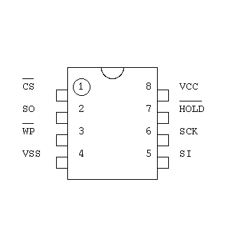
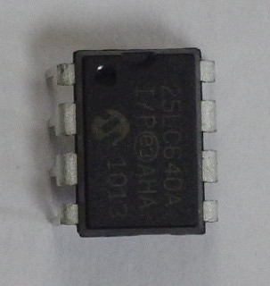
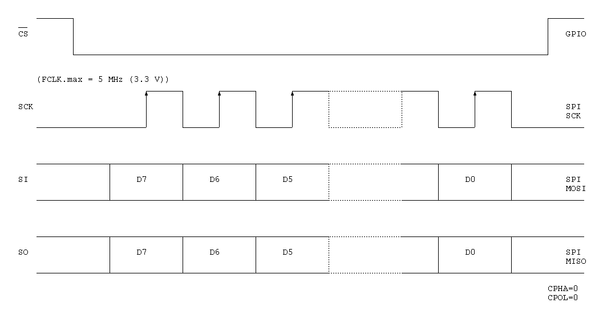
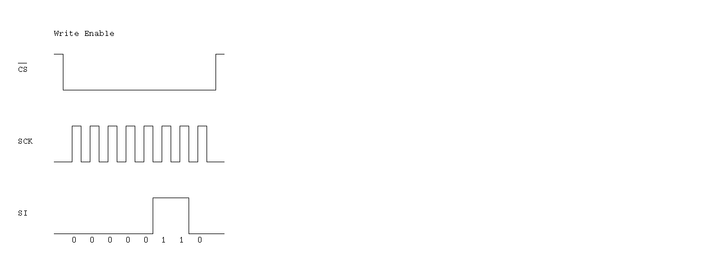
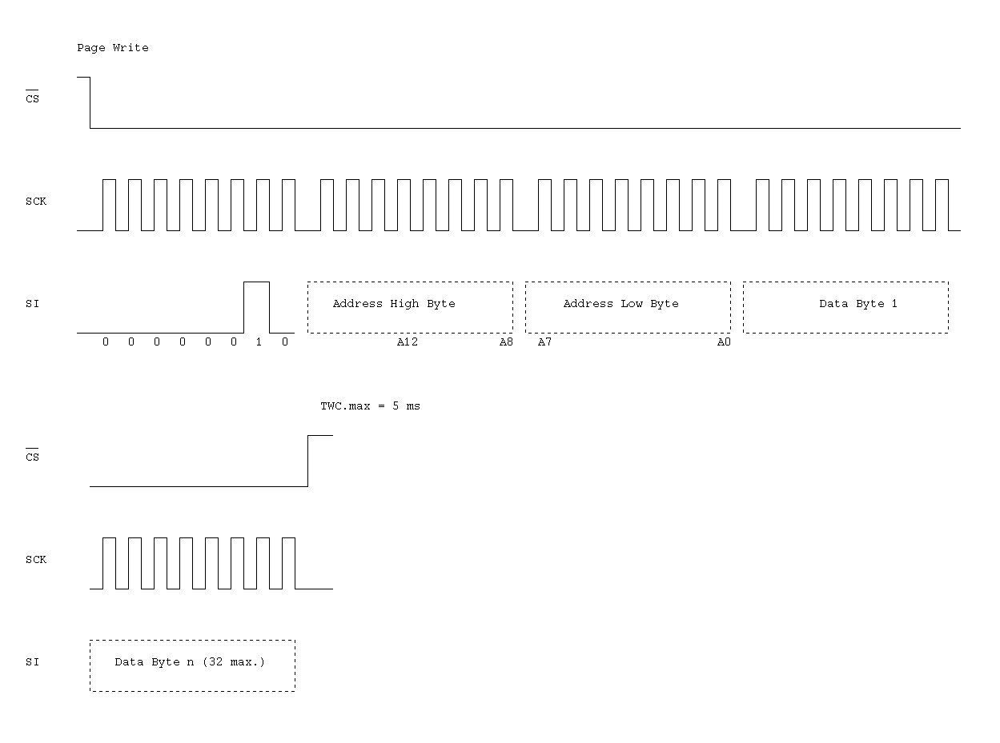

Microchip 25LC640A
The 25LC640A is a 64 Kbit (8192 x 8-bit) EEPROM. It has an SPI interface.
 
SPI interface

Instruction
| Name | Format | Description |
|---|---|---|
| READ | 0000 0011 | Read data from memory array beginning at selected address |
| WRITE | 0000 0010 | Write data to memory array beginning at selected address |
| WRDI | 0000 0100 | Reset the write enable latch |
| WREN | 0000 0110 | Set the write enable latch |
| RDSR | 0000 0101 | Read STATUS register |
| WRSR | 0000 0001 | Write STATUS register |



